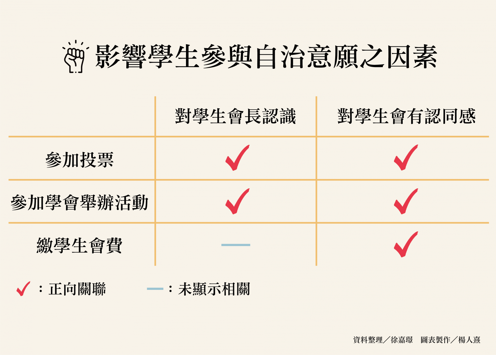
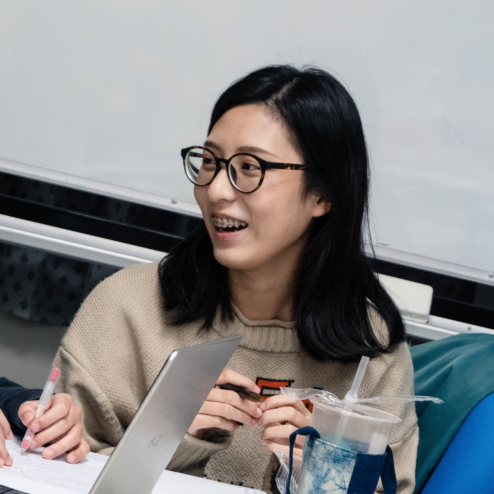

【記者徐嘉璟綜合報導】落實學生自治能監督校方運作、保障學生權益，然大學生參加自治事務的意願普遍低落。國立臺北大學公共行政暨政策學系教授劉嘉薇與其學生團隊，鑑於北大學生會會長選舉的投票率驟降（註），發表論文〈影響大學生參與學生自治組織因素之探討：以國立臺北大學日間部學生會為例〉，並於6月刊登在最新一期的《國家發展研究》期刊，盼助學生會更了解學生需求，提高自治參與度。
註：國立臺北大學在105學年度前，投票率穩定維持在20％以上，108學年度僅剩6.11％。
此論文以學生角度出發，探討影響學生參與自治的因素。研究顯示，當學生對學生會的認同感越高，就會較願意投票、繳交會費或出席學生會的活動。劉嘉薇說：「學生可能會覺得議題和自己切身關聯不高。」他補充，推動和同學日常有關的政策，像是增加助教人手，以增進教學品質，也可提高學生對學生會的好感，未必要以政治理念為號召。

劉嘉薇解釋，繳交學生會費也是參與自治的一種表現。繁忙的大學生可以用簡單的方式來支持學生會。圖為示意圖。 圖／徐嘉璟攝
從臺大校務會議的組成來看，學生代表通常只佔十分之一，國立臺灣大學學生會會長楊子昂說：「一般學生可能覺得在記者會上，學生會好像講話很大聲，但學生能影響的事，我自己覺得滿有限的。」不過劉嘉薇建議，若善加利用社群媒體，「學生會可以成為帶動討論的平台，不再只是象徵權力的角色。」替學生發聲的同時，也增加能見度，提高學生向心力，藉此對校方形成更大的壓力。
研究亦發現，當學生認識學生會長，就會較積極參加自治。劉嘉薇表示，除了倡議場合，學生會長可多出現在不同活動。若會長依據現場氣氛，提出合適的說辭，能夠營造領袖形象。楊子昂以灣流音樂祭為例，在場同學有些是在意本土語言議題，有些則是喜歡音樂，用活動包裝訴求，能接觸到更多學生。但他也補充，學生會長若論述過多，學生可能會覺得無聊，造成場面尷尬。
國立臺灣大學政治學系政治理論組學生梁聖宇則建議，學生會長可多接觸校內各領域的意見領袖，像是系學會和社團，以了解更多同學的需求，並建立實際連結。楊子昂也認同說：「學生會可以跟社團結盟，合作推廣理念。」但他也建議，學生參加社團也能表達訴求，「不一定要刻意提升大家對學生會的參與度」，他鼓勵學生關心議題本身。
圖為楊子昂於活動中致詞。他表示，臺大學生會的曝光度已經很高，提升學生對各部會員的認識，效益可能更好。 圖／楊子昂提供
「透過學生會，學生的權益可以被彰顯出來，其實大家可以有很多想像。」劉嘉薇說，學生會可以扮演溝通橋樑，匯聚同學的意見。楊子昂亦表示，他會查看觸及率較高的粉專貼文，作為學生會的施政參考。整體而言，此研究發現學生對學生會的認識，和學生自治參與度呈正相關。團隊期望未來學生會能利用科技，觸及更多校內學生，提升青年對政治、公共事務的識別能力。

徐嘉璟
千禧年生於打狗，貓空寄居中，政大新聞系三年級。喜歡打狗大於貓空，喜歡貓貓狗狗，但貓貓大於狗狗。